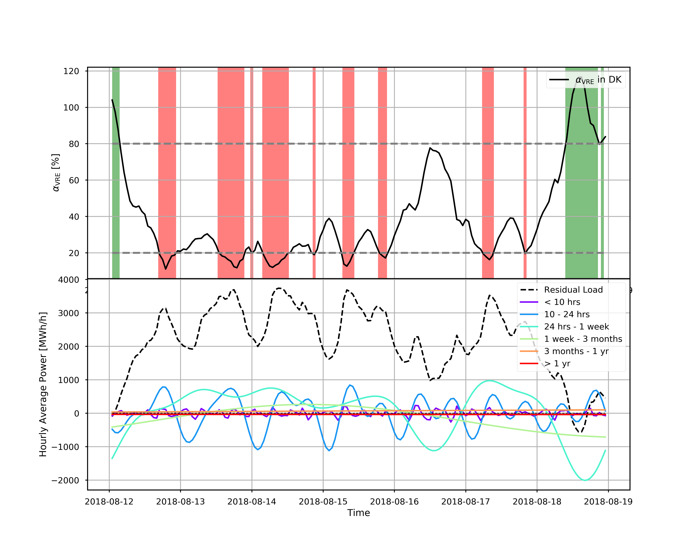
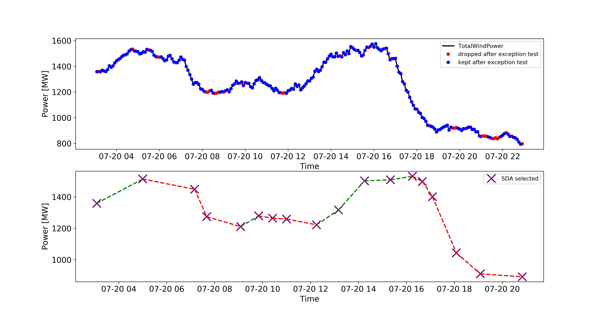

Welcome to the documentation of windpype!¶
Indices and tables¶
What the code does¶
windpype is a tool for characterizing fluctuations in wind power production and the
requirements for energy storage options in scenarios of different penetration of variable renewable energy (VRE).
The code is tailored to Denmark, with the following input data:
- Electricity Balance Data from energinet
- Wind turbine capacity and installation info from Energistyrelsen
From there, windpype collects the following in an hourly basis:
- Total wind power produced, aggregated for DK1, DK2 and DK
- Total solar power produced, aggregated for DK1, DK2 and DK
- Gross consumption, aggregated for DK1, DK2 and DK
- Total installed capacity of wind turbines, aggregated for DK1, DK2 and DK
The code that is currently released with windpype includes data from Energinet and Energistyrelsen for 2013-2018.
Two methods can be used to identify ramps:
- a Discrete Fourier Transform (DFT)
- a Swinging Door Algorithm (SDA).
In addition, there are different options to look at hourly ramps and hourly share of VRE.
Purpose¶
Quantifying the requirements for ES now and in the future is critical to the preparation of a flexible power system that can handle ever-increasing penetrations of VRE. Denmark being a front-runner in the integration of wind power, can be used as a live experiment for other countries aiming at increasing their production of VRE see more here.
Some examples¶
In the figure below, the DFT is divided into a low and a high frequency part, and each is used to find (down) ramps of different durations, either long duration (red areas) or short duration (blue areas).
In the next figure, the SDA approach is used to first compress the data, then select sections of linear ramping up (green dashed line) or down (red dashed line). A nice description of the SDA can be found in this video presentation by OSIsoft LLC.
Contact¶
For questions, contact Karen at: pardos at dtu.dk